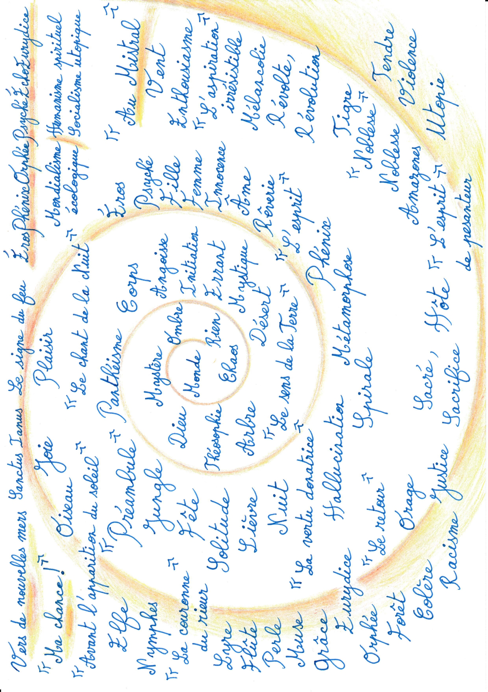
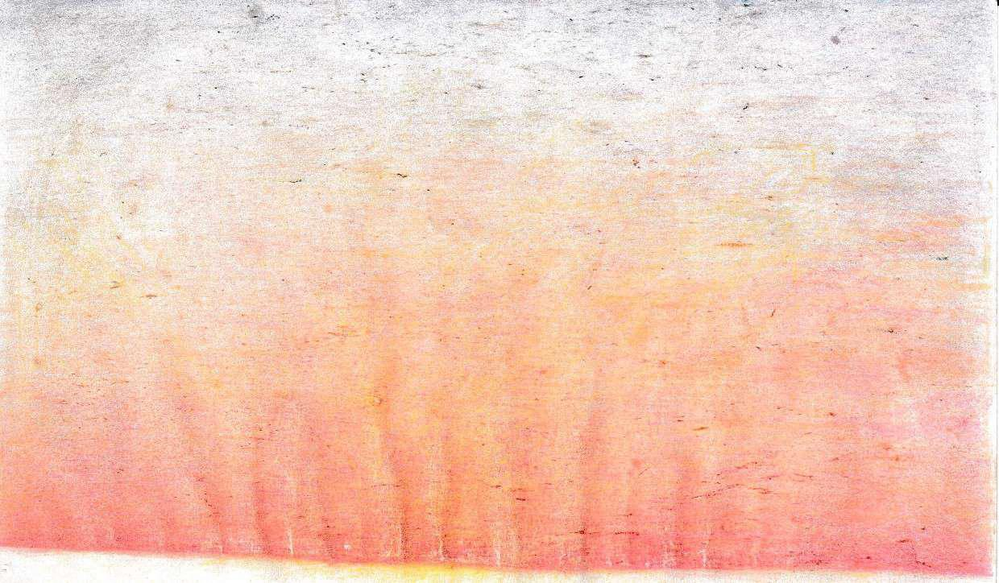

Épopée

Ma chance
Vers de nouvelles mers
Sanctus ianus
Le signe du feu
Monde
Chaos
Rien
Ombre
Mystère
Dieu
Théosophie
Arbre
Le sens de la Terre
Désert
Mystique
Errant
Initiation
Angoisse
Corps
Panthéisme
Préambule
Jungle
Fête
Solitude
Lièvre
La vertu donatrice
Nuit
Hallucination
Spirale
Métamorphose
Phénix
L'esprit
Rêverie
Âme
Innocence
Femme
Fille
Psyché
Éros
Le chant de la Nuit
Plaisir
Joie
Oiseau
Avant l'apparition du soleil
Elfe
Nymphes
La couronne du rieur
Lyre
Flûte
Perle
Muse
Grâce
Eurydice
Orphée
Le retour
Forêt
Orage
Colère
Racisme
Justice
Sacré-sacrifice
Hôte
L'esprit de pesanteur
Utopie
Amazones
Violence
Noblesse
Tendre
Noblesse 2
Tigre
Révolte-révolution
Mélancolie
Ma fille
L'aspiration irrésistible
Enthousiasme
La danse de l'éternité
Vent
Au Mistral
